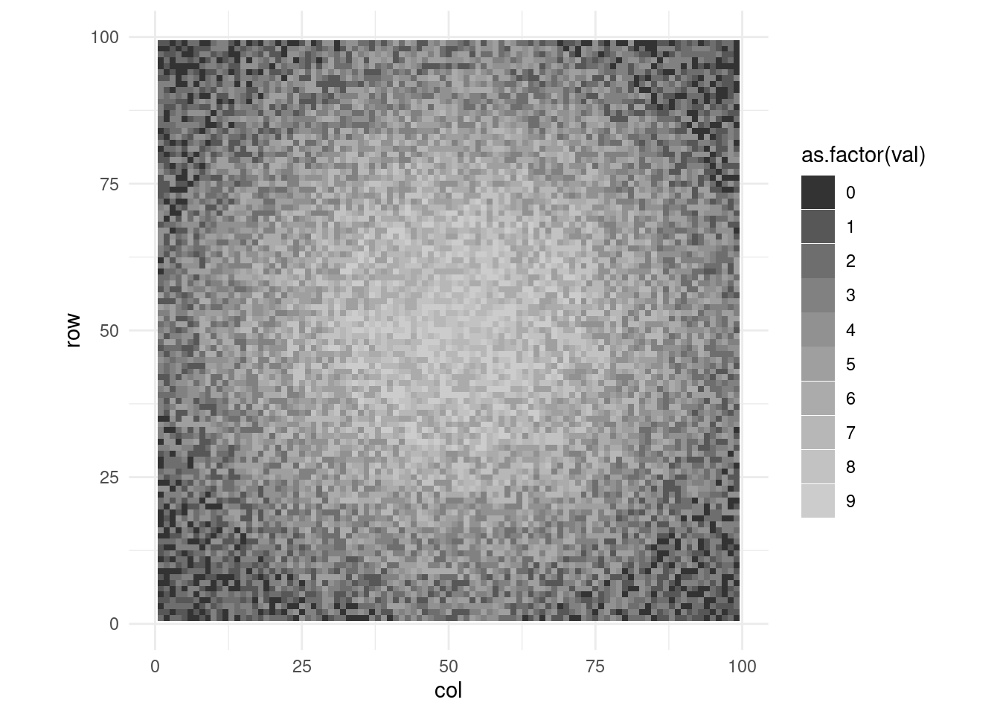
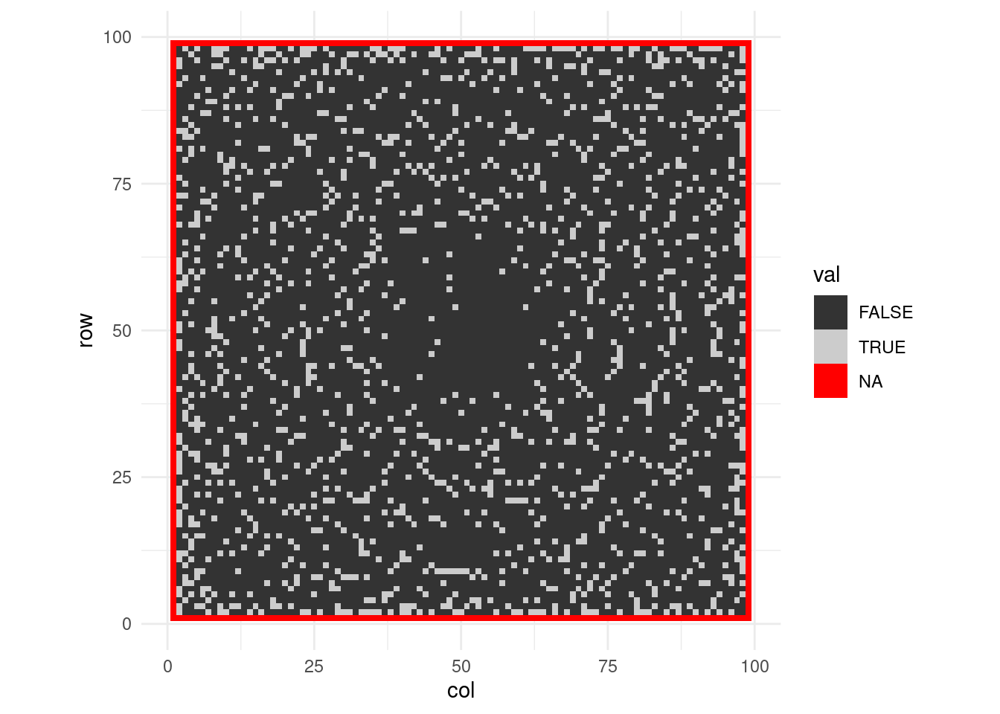

input_file_path <- here("DATA", "2022", "input_day_08.txt")
no_rows <- system(paste("wc -l", input_file_path), intern = TRUE) %>%
word(1) %>%
as.numeric()
no_cols <- scan(input_file_path, what = "character", nmax = 1) %>% str_length()Day 8
Data
The input is height of the trees on a grid.
There are 99 rows and 99 columns on the grid.
input_grid <- scan(
input_file_path,
what = "character"
)
# let's make a matrix out of it
input_grid <- map(
input_grid,
function(row){
cur_row_trees <- str_split(row, pattern = "") %>%
unlist()
return(as.numeric(cur_row_trees))
}) %>%
do.call(rbind, args = .)We can visualize it:
input_grid %>%
as_tibble(rownames = "row") %>%
pivot_longer(cols = V1:V99, names_to = "col", values_to = "val") %>%
mutate(
col = as.numeric(str_sub(col, start = 2, end = -1)),
row = as.numeric(row)
) %>%
ggplot(aes(col, row)) +
geom_tile(aes(fill = as.factor(val))) +
coord_fixed() +
scale_fill_grey() +
theme_minimal()Warning: The `x` argument of `as_tibble.matrix()` must have unique column names if
`.name_repair` is omitted as of tibble 2.0.0.
ℹ Using compatibility `.name_repair`.
Functions
check_visibility <- function(sequence, last = TRUE){
# I have a sequence of heights that ends or begins with the tree we are checking
if(last){
chosen_tree <- sequence[length(sequence)]
other_trees <- sequence[-length(sequence)]
return(all(other_trees < chosen_tree))
}
chosen_tree <- sequence[1]
other_trees <- sequence[-1]
return(all(other_trees < chosen_tree))
}Check all trees
We don’t need to check trees that are on the edge.
no_visible_trees <- no_cols*2 + (no_rows - 2)*2
visibility_matrix <- matrix(
NA, nrow = no_rows, ncol = no_cols
)
for(cur_row in 2:(no_rows - 1)){
for(cur_col in 2:(no_cols - 1)){
# check from top
cur_sequence <- input_grid[1:cur_row, cur_col]
vis_from_top <- check_visibility(cur_sequence)
# check from bottom
cur_sequence <- input_grid[cur_row:no_rows, cur_col]
vis_from_bottom <- check_visibility(cur_sequence, FALSE)
# check from left
cur_sequence <- input_grid[cur_row, 1:cur_col]
vis_from_left <- check_visibility(cur_sequence)
# check from right
cur_sequence <- input_grid[cur_row, cur_col:no_cols]
vis_from_right <- check_visibility(cur_sequence, FALSE)
cur_tree_vis <- any(
c(vis_from_top, vis_from_bottom, vis_from_left, vis_from_right)
)
visibility_matrix[cur_row, cur_col] <- cur_tree_vis
no_visible_trees <<- no_visible_trees + as.numeric(cur_tree_vis)
}
}That’s how looks the visibility matrix:
visibility_matrix %>%
as_tibble(rownames = "row") %>%
pivot_longer(cols = V1:V99, names_to = "col", values_to = "val") %>%
mutate(
col = as.numeric(str_sub(col, start = 2, end = -1)),
row = as.numeric(row)
) %>%
ggplot(aes(col, row)) +
geom_tile(aes(fill = val)) +
coord_fixed() +
scale_fill_grey() +
theme_minimal()
There are 1823 trees that are visible from outside of the grid! 🥳